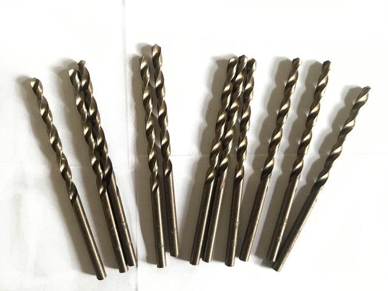

Свердла цх довгіСверла цх длинные
Свердло ц/х ф 2.05 А1 длин. ВИЗ 85х55Сверло ц/х ф 2.05 А1 длин. ВИЗ 85х55
ОписОписание
Свердло ц/х ф 2.05 А1 длин. ВИЗ 85х55 — професійний металорізальний інструмент для свердління отворів у металі. Основні параметри: діаметр Ø 2.05 мм, розмір 85×55 мм та циліндричний хвостовик. Виробник: ВИЗ. Інструмент перевірений і готовий до відвантаження. В наявності 191 шт. на складі у Харкові. Ціна 45 грн без ПДВ. Опт і роздріб, відправлення по всій Україні. Замовлення від 2 000 грн.Сверло ц/х ф 2.05 А1 длин. ВИЗ 85х55 — профессиональный металлорежущий инструмент для сверления отверстий в металле. Основные параметры: диаметр Ø 2.05 мм, размер 85×55 мм и цилиндрический хвостовик. Производитель: ВИЗ. Инструмент проверен и готов к отгрузке. В наличии 191 шт. на складе в Харькове. Цена 45 грн без НДС. Опт и розница, отправка по всей Украине. Заказ от 2 000 грн.
ХарактеристикиХарактеристики
| Тип інструментуТип инструмента | СвердлоСверло |
|---|---|
| КатегоріяКатегория | Свердла цх довгіСверла цх длинные |
| Діаметр ØДиаметр Ø | 2.05 мм2.05 мм |
| РозміриРазмеры | 85×55 мм85×55 мм |
| ХвостовикХвостовик | циліндричнийцилиндрический |
| ВиробникПроизводитель | ВИЗВИЗ |
| СтанСостояние | новийновый |
| Код товаруКод товара | FLK-05704FLK-05704 |
| НаявністьНаличие | 191 шт.191 шт. |